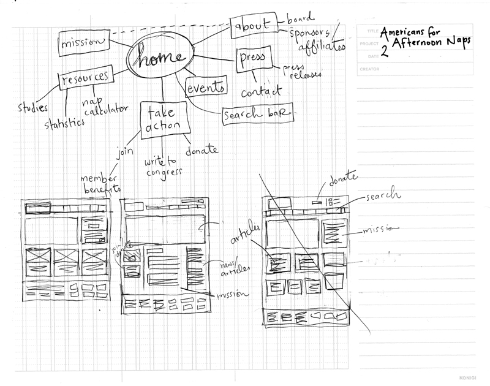

Americans for Afternoon Naps
User Stories
Cyril, student
- doing research on sleep patterns and ways to be most productive
- found via article on LifeHacker
- wants scientific proof that naps are important
- when is the best time to take a nap / duration of power nap
- access: mobile phone
Marty, manager
- heard that some offices are installing nap rooms
- what's this about? is there data to back this up? are employees just lazy? (statistics, articles)
- found via article in Business Week
- what companies back this movement?
- access: laptop/desktop
Betty, sleep researcher
- looking for funding for sleep study
- found via Google
- looking for grants, staff members to contact, sponsors
- access: laptop/desktop
Site Map & Wireframe
